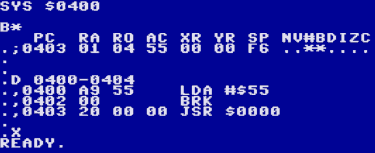

Chapter 7: Machine Language Monitor

The built-in machine language monitor can be started with the MON BASIC command. It is based on the monitor of the Final Cartridge III and supports most of its features.
If you invoke the monitor by mistake, you can exit with by typing X, followed by the RETURN key.
Some features specific to this monitor are:
The
Icommand prints a PETSCII/ISO-encoded memory dump.The
ECcommand prints a binary memory dump. This is also useful for character sets.Scrolling the screen with the cursor keys or F3/F5 will continue memory dumps and disassemblies, and even disassemble backwards.
The following commands are used to dump memory contents in various formats:
Dump |
Prefix |
description |
|---|---|---|
|
|
8 hex bytes |
|
|
32 PETSCII/ISO characters |
|
|
1 binary byte (character data) |
|
|
3 binary bytes (sprite data) |
|
|
disassemble |
|
|
registers |
Except for R, these commands take a start address and an optional end address (inclusive). The dumps are prefixed with one of the “Prefix” characters in the table above, so they can be edited by navigating the cursor over a printed line, changing the data and pressing RETURN.
Note that editing a disassembled line (prefix ,) only allows changing the 1-3 opcode bytes. To edit the assembly, change the prefix to A (see below).
These are the remaining commands:
Command |
Syntax |
Description |
|---|---|---|
|
start end byte |
fill |
|
start end byte [byte…] |
hunt |
|
start end start |
compare |
|
start end start |
transfer |
|
address instruction |
assemble |
|
[address] |
run code |
|
[address] |
run subroutine |
|
value |
convert hex to decimal |
|
value |
convert decimal to hex |
|
exit monitor |
|
|
bank |
set ROM bank |
|
bank |
set RAM/VRAM bank/I2C |
|
[”filename”[,dev[,start]]] |
load file |
|
“filename”,dev,start,end |
save file |
|
command |
send drive command |
All addresses have to be 4 digits.
All bytes have to be 2 digits (including device numbers).
The end address of
Sis exclusive.The bank argument for
Kis00-FF: switch to main RAM, set RAM bankV0-V1: switch to Video RAM, set VRAM bankI: switch to the I2C address space
The bank argument for
Ois00-FF: set ROM bank
@takes:8,9to change the default drive (also forL)$to display the disk directoryanything else as a disk command
Monitor Display
MON
C*
PC RA RO AC XR YR SP NV#BDIZC
.;E3bb 01 04 00 00 00 F6 ........
.
Column |
Description |
|---|---|
PC |
Program Counter and the current address |
RA |
Active RAM Bank |
RO |
Active ROM Bank |
AC |
Accumulator Value |
XR |
X Register Value |
YR |
Y Register Value |
SP |
Stack Pointer |
NV#BDIZC |
Status Register |
Status Register Bits |
Bit Description |
|---|---|
N |
Negative |
V |
Overflow Vector |
# |
Unused |
B |
A Break Point is Active |
D |
Decimal Mode Active (also known as Binary Code Decimal) |
I |
IRQ is Inhibited |
Z |
Zero Bit |
C |
Carry Bit |